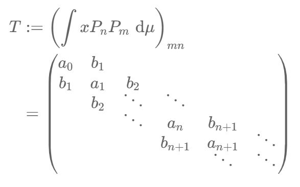
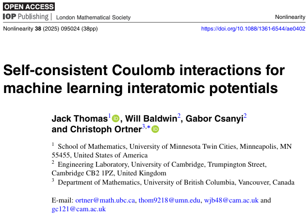
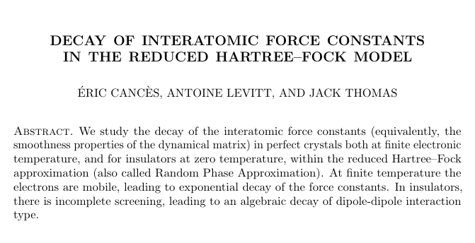
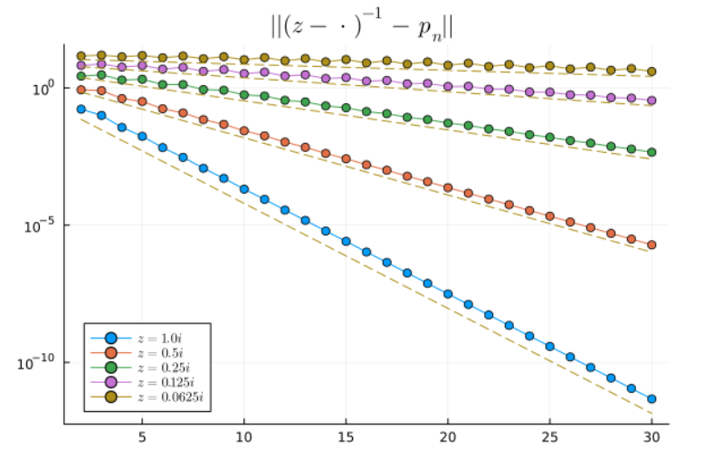
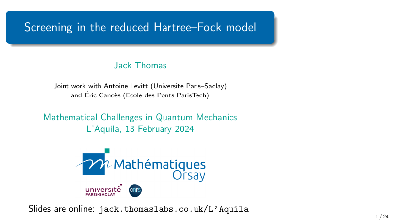
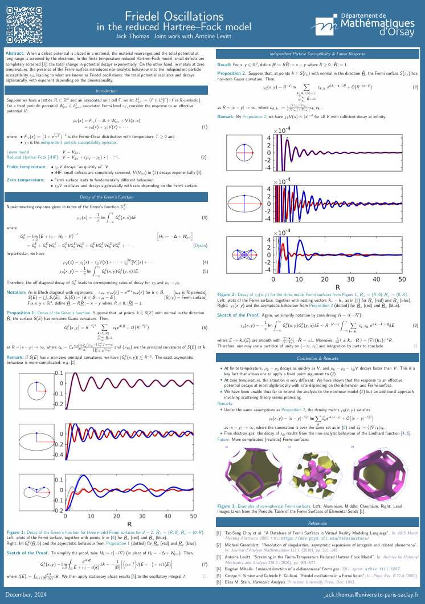
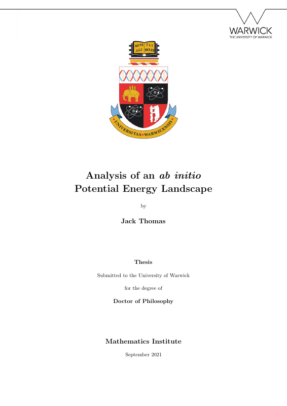
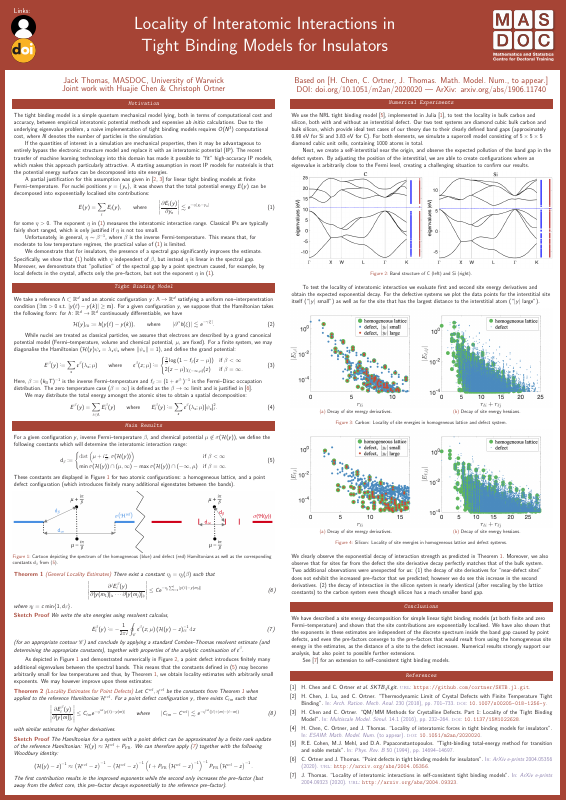
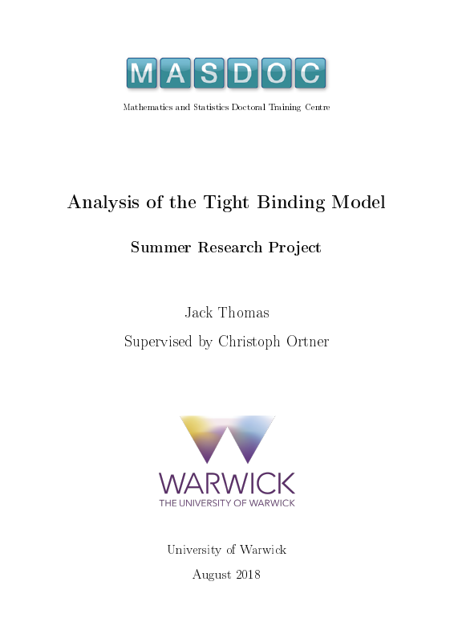

Talks, group meetings and notes

Group meeting on measures, moments, OPs, Jacobi operators, and how they are related to each other

Group meeting - Christoph Ortner’s group

Group meeting on the decay of interatomic force constants in the reduced Hartree-Fock model.


Screening of defects in metals and insulators in the reduced Hartree-Fock model (joint work with Éric Cancès and Antoine Levitt).

Friedel oscillations in the reduced Hartree-Fock model (joint work with Antoine Levitt).
Body-ordered approximations, polynomial approximation and interpolation nodes.
Sparsity of the potential energy landscape and the theory of machine-learned interatomic potentials (joint work with Huajie Chen and Christoph Ortner).

PhD thesis (Mathematics Institute, University of Warwick), supervised by Christoph Ortner. Faculty Thesis Prize 2022 (joint winner).

Exponentially localised site-energy decompositions for tight binding models of insulators (joint work with Christoph Ortner and Huajie Chen).

MSc Summer Research Project (MASDOC, University of Warwick), supervised by Christoph Ortner.